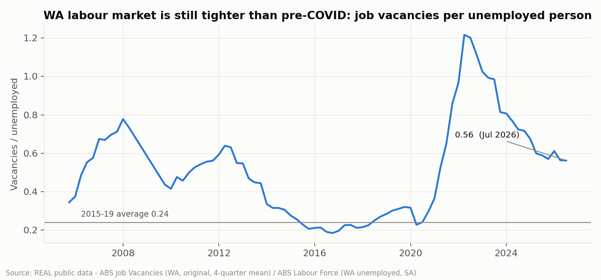
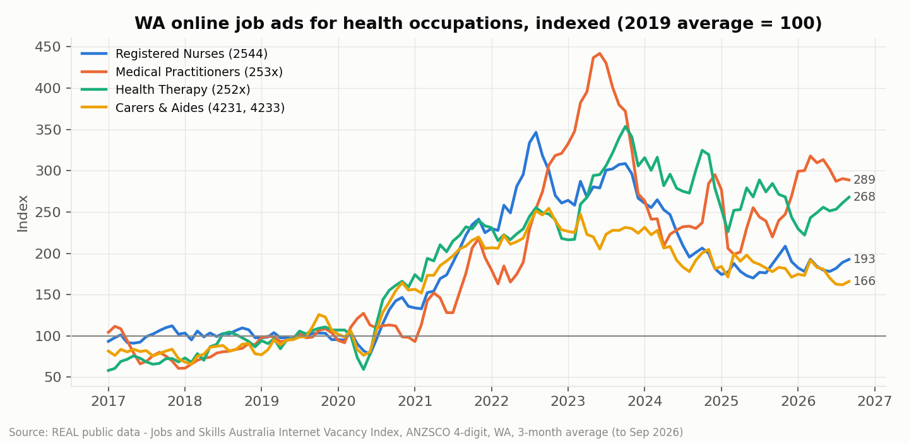
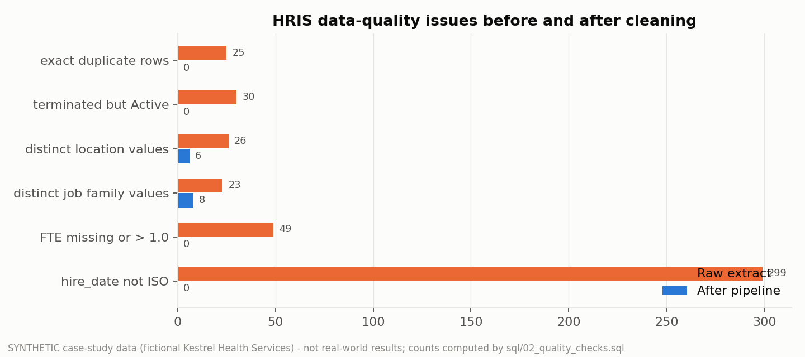
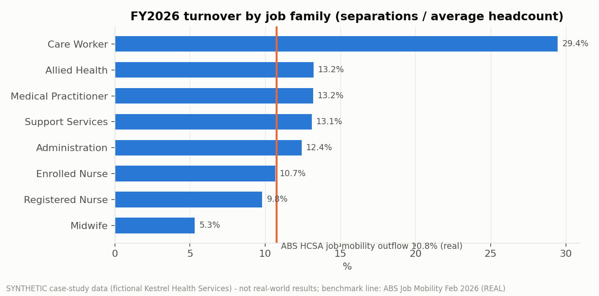
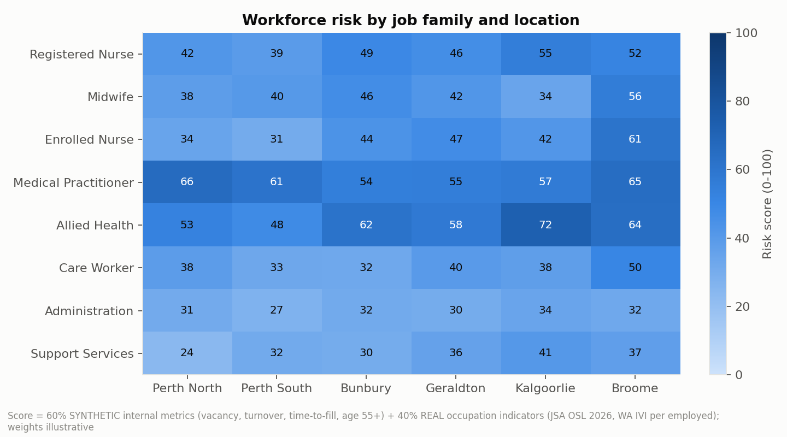
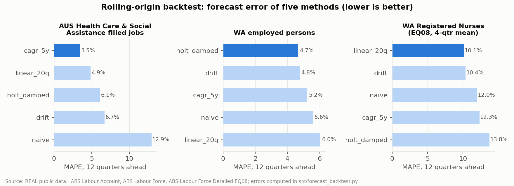
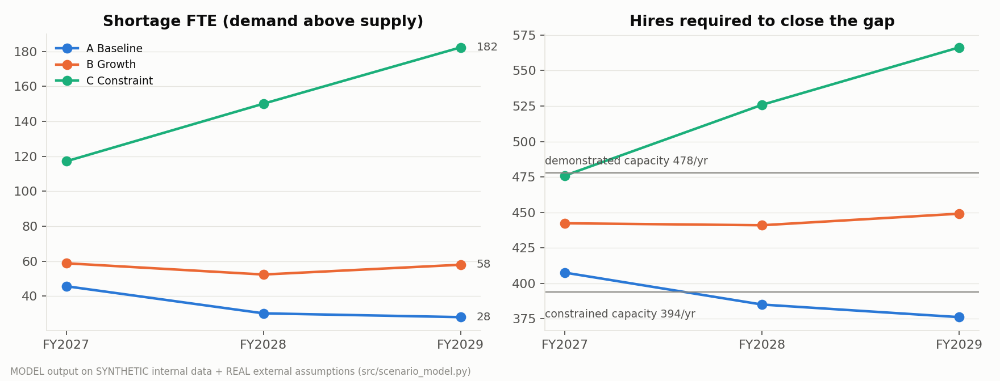
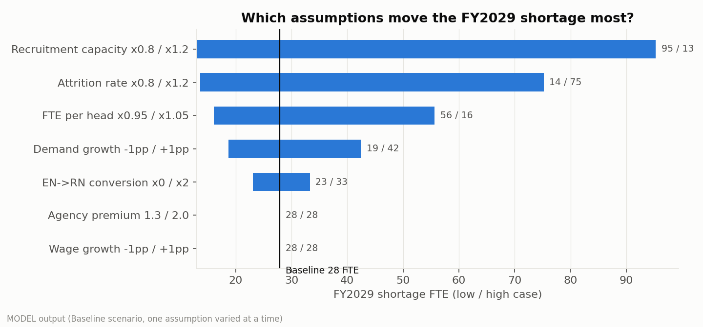
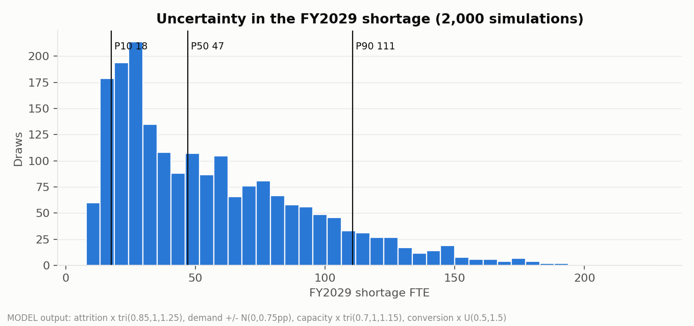
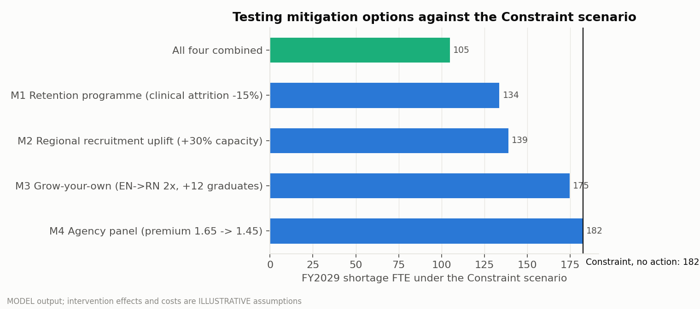

Brief
How should a 2,000-employee health provider with six sites across Western Australia manage workforce shortages, vacancies, recruitment capacity and labour cost over FY2027–FY2029? The organisation, Kestrel Health Services, is fictional. Public data cannot show one employer's vacancies, turnover or time-to-fill, so its HRIS, payroll, finance, recruitment and agency records are synthetic, with data-quality defects planted on purpose. Everything about the labour market is real public data. Every table and chart says which is which.
Research first
I verified the data before designing the analysis. Each of the 21 files was downloaded with a SHA-256 manifest and parsed to confirm its fields and periods. The set covers WA labour supply (Labour Force, occupation-by-state employment, Census 2021 age profiles), demand (JSA employment projections, online job ads, population), shortage and recruitment conditions (Occupation Shortage List 2026, the employer recruitment survey, job vacancies), turnover benchmarks (ABS Job Mobility) and wage growth. Three sources I hoped to use don't exist as files: state-level shortage ratings, a downloadable National Health Workforce Dataset, and WA-specific health turnover. I left them out rather than approximate them.
The evidence supports choosing health in WA. The state has 0.56 job vacancies per unemployed person, against 0.24 in 2015–19. Online ads for Registered Nurses are 93% above their 2019 level, and for doctors 189% above. Nurses, midwives, doctors and most allied health occupations are rated in national shortage.


Cleaning and reconciling
The real data had traps of its own. The ABS vacancy survey was suspended from 2008-Q3 to 2009-Q3. WA seasonally adjusted part-time employment isn't published, so I derived it. Summing every row of the ABS population age field counts people three times, because it mixes single years, five-year groups and a total. Each issue is caught by a named reconciliation rule with an exception log.
The synthetic HR extract had 2,057 rows marked Active for 1,990 real employees: duplicate rows, stale rehire records, leavers still flagged Active, FTE stored ten times too large, and 26 spellings of six site names. On raw figures the organisation looked over its establishment. After cleaning it is 74.3 FTE (4.4%) vacant, and about 80 FTE of that has no live requisition, so it will never be filled. Every payroll record that doesn't match HR is explained.
| Check | Raw | Cleaned | Fix |
|---|---|---|---|
| Active headcount | 2,057 | 1,990 | dedupe, close leavers, latest record per person |
| Total FTE | 1,728.5 | 1,627.5 | repair ×10 errors, impute from payroll hours |
| Site / job family labels | 26 / 23 | 6 / 8 | normalise, map, confirm by cost centre |
| Unexplained payroll rows | – | 0 | final pays, contractors, unpaid leave |
| Rebuilt opening stock, Jul 2022 | – | 1,819 | matches the true figure exactly |

Where the pressure sits
Turnover fell from 17.7% in FY2023 to 14.5% in FY2026, against an ABS industry benchmark of 10.8%, which measures a wider concept. Care Workers turn over fastest at 29.5%, and 38.8% of new care workers leave within a year. Doctors take a median 101 days to hire. Broome runs a 14.0% vacancy rate. Agency spend grew from $3.6M to $6.6M in three years.


Forecasting and scenarios
Before trusting a forecast method, I backtested five of them on real ABS series. Three years ahead, the best method missed national health employment by 3.5% on average, against 12.9% for a no-change forecast. WA nurse employment was too noisy to trend (about 10% error), so demand growth comes from JSA's occupation projections instead. Every method under-forecast health growth.

The model applies one identity to 48 job family × site cells: ending headcount = starting + hires + graduates + nurse conversions in + transfers − separations − conversions out. Hiring is capped at the organisation's demonstrated recruitment capacity. Assumptions are tagged real, synthetic or illustrative. The Constraint scenario's capacity cut, for example, uses JSA's real fill rates of 57% for shortage occupations against 78% for the rest. The Excel version uses live formulas and matches the Python engine on all 432 compared cells.
| FY2029 | Baseline | Growth | Constraint |
|---|---|---|---|
| Shortage FTE | 27.9 | 57.9 | 182.4 |
| Hires needed / capacity | 376 / 478 | 449 / 478 | 566 / 394 |
| Agency cost, 3 years | $13.2M | $20.9M | $48.5M |
| Unfilled FTE-years | 61 | 97 | 252 |



Validation
| Check | Result | Detail |
|---|---|---|
| ABS / Census reconciliation | 7 rules pass | tolerances documented |
| Cleaned data vs hidden truth | exact | headcount, family, site, hire date |
| SQL vs Python | exact | headcount, FTE, vacancy, 4 years of turnover |
| Excel vs Python | 432 / 432 | max difference 5.8 × 10⁻⁸ |
| Model identities | pass | stock-flow closes in every scenario |
| Model backtest | synthetic only | checks mechanics, not real accuracy |
| Power BI report | not built | specification, DAX and wireframe only |
What I'd tell the executive team
- 01 Fix the single source of truth first. Raw HR figures overstated FTE by 6.2% and hid 74 FTE of vacancy. Every vacancy needs a requisition or a decision to hold it.
- 02 Recruit doctors and allied health early. Hire on a 4–6 month lead time, set up a preferred locum panel and build university pipelines. Required medical hires are 149% of what the organisation has shown it can hire.
- 03 Keep Care Workers through their first year. They are 77 of the 182 FTE Constraint shortage.
- 04 Pilot regional recruitment at Broome and Kalgoorlie. A 30% regional capacity uplift cut the Constraint shortage from 182 to 139 FTE, the cheapest option tested on illustrative costs.
- 05 Move nurses rather than hire more. Perth South is 14 FTE over its nursing establishment while Kalgoorlie is short.
- 06 Treat agency pricing as a cost lever, not a supply lever. A cheaper panel saves about $5.7M but closes no gap.
- 07 Watch four triggers: turnover above 16%, median time-to-fill above 50 days, WA vacancies per unemployed above 0.7, and WA health ads up more than 20% a year. If two hold for two quarters, switch to the Constraint plan.

Limits and next steps
The organisation and its records are simulated, so the findings show the method, not facts about a real employer. Shortage ratings are national only, demand is proxied by the budgeted establishment, and programme effects are assumptions. To rerun this for real, I'd need monthly HRIS snapshots including leavers, position-level establishment from Finance, and the full requisition history from the applicant tracking system.